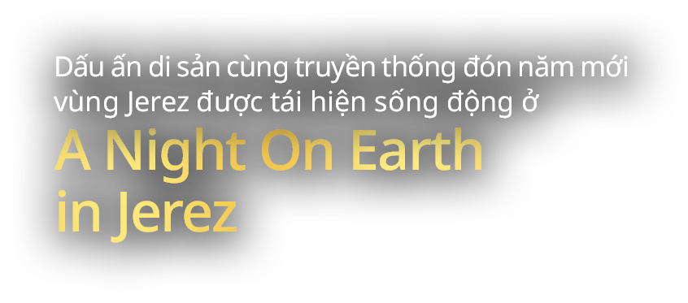
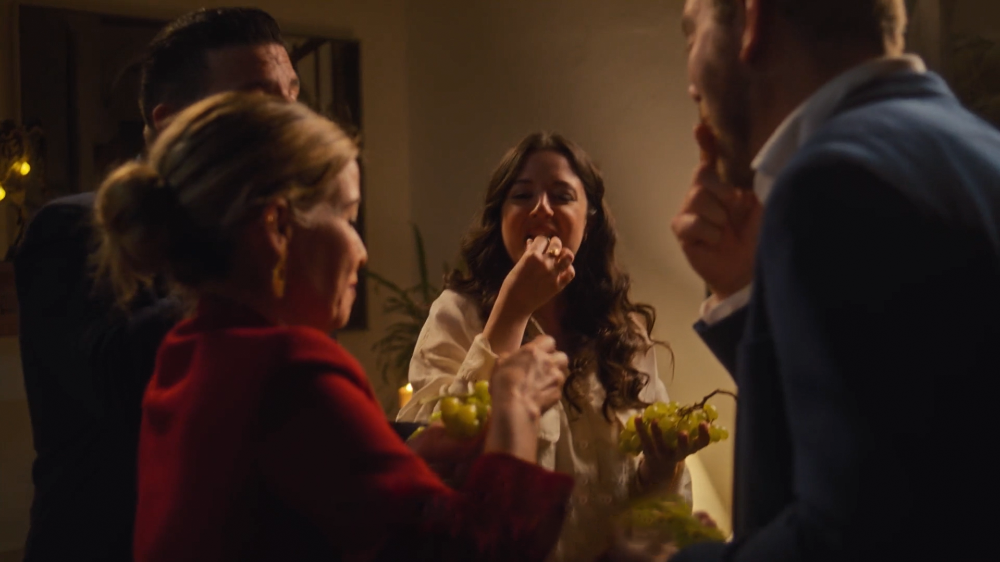
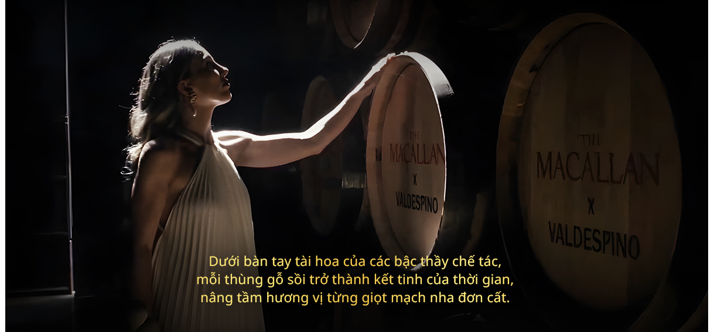
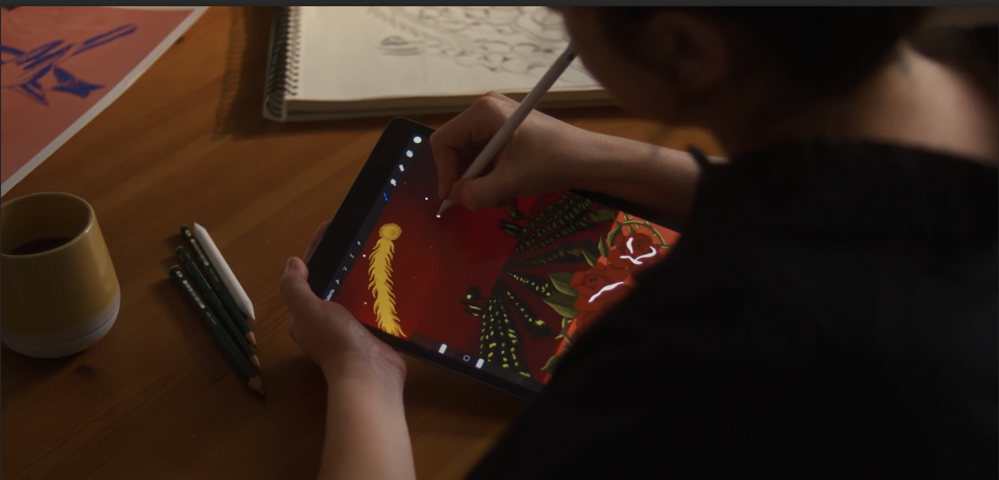
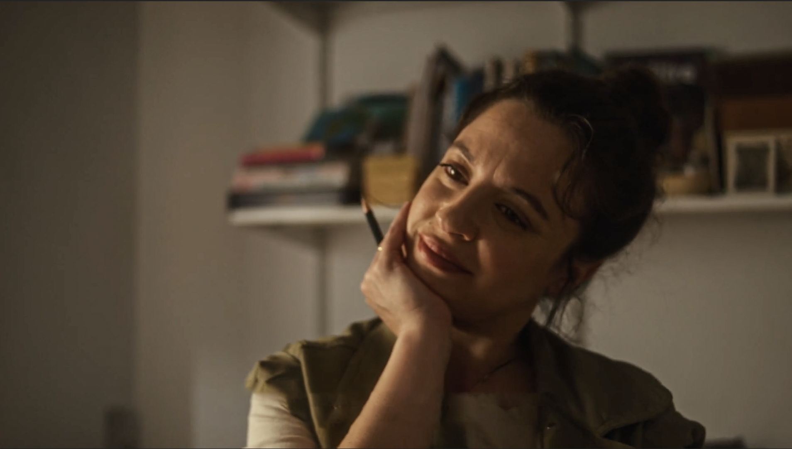

<!doctype html>
<html lang="en">
<head>
    <meta charset="UTF-8">
    <meta name="viewport"
          content="width=device-width, user-scalable=no, initial-scale=1.0, maximum-scale=1.0, minimum-scale=1.0">
    <meta http-equiv="X-UA-Compatible" content="ie=edge">
    <link rel="stylesheet" href="main.css">
    <title>Document</title>
</head>
<body>
<div class="main">
    <section class="section-1">
        <div class="item-section-1">
            
        </div>
        <div class="sub-item-section-2">
            <div class="content-item-section-2">
                <p>
                    A Night On Earth 2025 là lời mời gọi bước vào thế giới tinh hoa của The Macallan – nơi sắc vị thượng hạng và nghệ thuật đỉnh cao giao thoa, mang đến trải nghiệm độc bản dành riêng cho người thưởng lãm.
                </p>
            </div>
        </div>
    </section>
    <section class="section-2">
        <div class="item-section-2">
            <div class="img-section-2">
                
            </div>
            <div class="top-conten-section-2">
                <p>
                    Đi qua thăng trầm 200 năm, thương hiệu whisky trứ danh The Macallan không chỉ khẳng định tên tuổi bằng sắc vị độc bản mà còn trở thành biểu tượng cho sự sáng tạo vượt thời gian và tinh thần tôn vinh di sản văn hoá. Mỗi bộ sưu tập của thương hiệu xứ Speyside là một câu chuyện đa tầng ý nghĩa, nơi giới mộ điệu được dẫn dắt vào hành trình khám phá những giá trị ẩn sâu. Trên hành trình nâng tầm whisky thành một loại hình nghệ thuật, The Macallan đã hợp tác với những nghệ sĩ tài năng để kể câu chuyện qua lăng kính sáng tạo độc đáo, biến mỗi tác phẩm trở thành một biểu tượng sắc vị lẫn thẩm mỹ.
                </p>
            </div>
            <div class="mid-content-section-2">
                <div class="item-1-mid">
                    <p>Giữa những bộ sưu tập mang các câu chuyện ý nghĩa khác nhau, A Night On Earth của The Macallan như một cơn gió xuân thổi vào thế giới whisky, nhanh chóng chinh phục những tâm hồn yêu mạch nha đơn cất. Bằng việc hợp tác với những nghệ sĩ sinh ra tại chính nền văn hóa ấy, bộ sưu tập đã tái hiện một cách sinh động những nét đặc trưng văn hóa đón giao thừa, tạo nên một trải nghiệm đầy cảm xúc cho người thưởng thức. </p>
                </div>
                <div class="item-2-mid">
                    
                </div>
            </div>
            <div class="last-content">
                <p>
                    Năm nay, A Night on Earth tiếp tục tôn vinh nét đặc sắc trong văn hoá đón giao thừa, mở ra hành trình khám phá đầy cảm hứng đến Jerez, vùng đất đầy mê hoặc của Tây Ban Nha.  Bộ sưu tập không chỉ tôn vinh phong tục đón giao thừa độc đáo mà còn là điểm nhấn khép lại hành trình kỷ niệm 200 năm lịch sử đầy huy hoàng của The Macallan.
                </p>
                <p>
                    Chính cột mốc này đã trở thành lý do để thương hiệu lựa chọn Jerez – quê hương của những thùng gỗ sồi ướp rượu sherry trứ danh, vốn gắn kết sâu sắc với di sản của The Macallan.
                </p>
            </div>
        </div>

    </section>
    <div class="img-bottom-section-2">
        
    </div>
    <section class="section-3">
        
    </section>
    <section class="section-4">
        <div class="top-section-4">
            <p>
                Không ai thấu hiểu và gắn bó với một vùng đất bằng những tâm hồn được nuôi dưỡng bởi chính mạch nguồn văn hóa nơi ấy. Đó cũng là lý do cho sự bắt tay của The Macallan cùng họa sĩ Tây Ban Nha - Maria Melero. Những ký ức về Nochevieja – đêm giao thừa của Tây Ban Nha đã khơi nguồn cảm hứng để Maria khắc họa tinh tế và trọn vẹn hành trình trở về Jerez thời khắc chuyển giao giữa năm cũ và năm mới. Để rồi khi cầm trên tay tặng phẩm A Night On Earth in Jerez de la Frontera, mỗi người như chính thức đến với đêm giao thừa Jerez.
            </p>
        </div>
        <div class="item-4-img">
            <div class="collage">
                
                
                
                
            </div>
        </div>
        <div class="bottom-section-4">
            <p>
                Thiết kế A Night On Earth in Jerez de la Frontera gây ấn tượng với sắc đỏ chủ đạo, nổi bật là vườn nho và hoa hồng đỏ dưới bầu trời đầy sao. Những truyền thống đặc trưng của vùng đất được khắc họa như báo hiệu mỗi người đã thực sự đến với Jerez. Lớp vỏ thứ hai với hoạ tiết gạch Azulejo lại mở ra không gian mới, gợi nhớ về những ngôi nhà đặc trưng của thành phố này.
            </p>
        </div>
    </section>
    <section class="section-5">
        <div class="item-section-5">
            <p>
                Và khi lớp cuối cùng hiện ra,
                hình ảnh chùm nho Palomino xuất hiện, gợi nhắc về truyền thống ăn 12 quả nho vào đêm giao thừa, cũng là hy vọng cho năm mới thành công, may mắn. Mỗi lớp hộp như hé mở ra một câu chuyện, dẫn dắt người thưởng lãm vào hành trình
                khám phá sâu sắc hơn về văn hóa
                đêm giao thừa Tây Ban Nha
            </p>
        </div>
    </section>
    <section class="section-6">
        <div class="img-section-6">
            
        </div>
        <div class="mid-content">
            <div class="mid-content-section-6-1">
                <p>Sự khắc họa tinh tế và trọn vẹn phút giây giao thừa vùng Jerez đã khiến A Night On Earth 2025 trở thành một trải nghiệm nghệ thuật đầy cảm xúc. Mỗi chi tiết đều mang đậm dấu ấn văn hóa, mở ra một hành trình đầy cảm xúc về sự giao thoa giữa quá khứ và hiện tại. Chính vì thế, bộ sưu tập này không chỉ là lựa chọn hoàn hảo cho những người yêu thích whisky, mà còn là mảnh ghép tuyệt vời để bức tranh sum vầy trở nên trọn vẹn, ấm cúng.</p>
            </div>
           <div class="mid-content-section-6-2">
               
           </div>

        </div>
        <div class="content-bottom-section-6-2">
            <p>
                Trong sắc cam ấm áp hiện diện trên thân chai, A Night On Earth in Jerez de la Frontera trở thành lựa chọn hàng đầu cho những buổi tiệc năm mới. Bộ sưu tập dẫn lối khứu giác với cam quýt tươi mới và nho khô tràn đầy hy vọng cho chặng đường phía trước. Và rồi, chuyến du ngoạn của vị giác chính thức bắt đầu khi sự ấm áp của hạnh nhân phủ mật ong kết hợp cùng hương thảo tươi nhẹ nhàng lan tỏa trong khoang miệng, như một lời chúc an lành cho năm mới.
            </p>
        </div>
    </section>
    <section class="section-7">
        <div class="top-section-7">
            <div>
                <p>A Night On Earth in Jerez de la Frontera là sự hòa quyện hoàn hảo giữa nghệ thuật, di sản và tinh thần lễ hội, mang đậm dấu ấn của The Macallan - thương hiệu với lịch sử hơn hai thế kỷ, luôn kiên định với nguyên tắc "hoàn hảo không thỏa hiệp". Từng ngụm whisky không chỉ đánh thức mọi giác quan mà còn đưa người thưởng lãm vào một hành trình văn hóa và nghệ thuật của Jerez, nơi mỗi khoảnh khắc đều
                    trở thành một ký ức đáng nhớ.</p>
            </div>
        </div>
        <div class="bottom-section-7">
            <div>
                <p>A Night On Earth in Jerez de la Frontera là sự hòa quyện hoàn hảo giữa nghệ thuật, di sản và tinh thần lễ hội, mang đậm dấu ấn của The Macallan - thương hiệu với lịch sử hơn hai thế kỷ, luôn kiên định với nguyên tắc "hoàn hảo không thỏa hiệp". Từng ngụm whisky không chỉ đánh thức mọi giác quan mà còn đưa người thưởng lãm vào một hành trình văn hóa và nghệ thuật của Jerez, nơi mỗi khoảnh khắc đều trở thành một ký ức đáng nhớ.</p>
            </div>
        </div>
    </section>
</div>
</body>
</html>